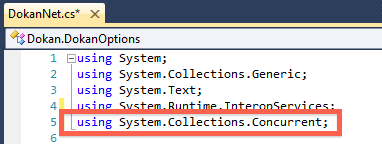
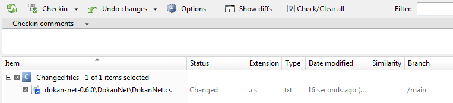
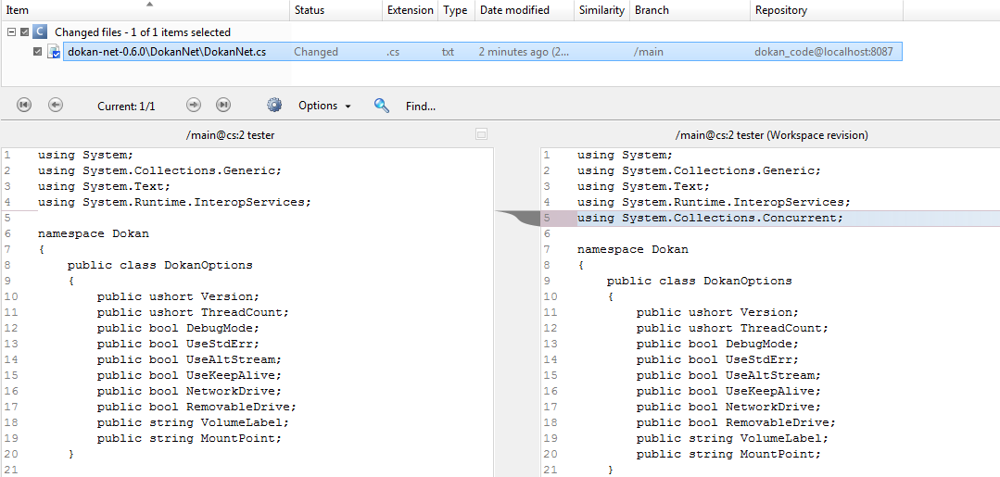
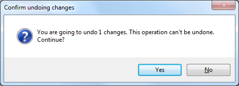

At any stage, you may want to undo something. We are going to undo the changes you’ve on your workspace.
We are going to modify ‘dokan-net-0.6.0\DokanNet\DokanNet.cs’. Edit the file and add the following at line 5

Figure 1: Modifying a file
Save the changes and go to ‘pending changes’ to review what you have modified so far:

Figure 2: Checking View
Now you can click on the “show diffs” button. Once the button is clicked you will see how comparing previous content with current content. The windows will look like this:

Figure 3: Show Diffs
Upps! You edited a file and then wanted to “un-edit” it. Don’t worry! Click on the “Undo changes” button, at the tool bar. After clicking a windows dialog will show up to confirm undoing changes:

Figure 4: Confirm undoing changes
You are ended the third lab. Congrats!
You are ended the third lab. Congrats!